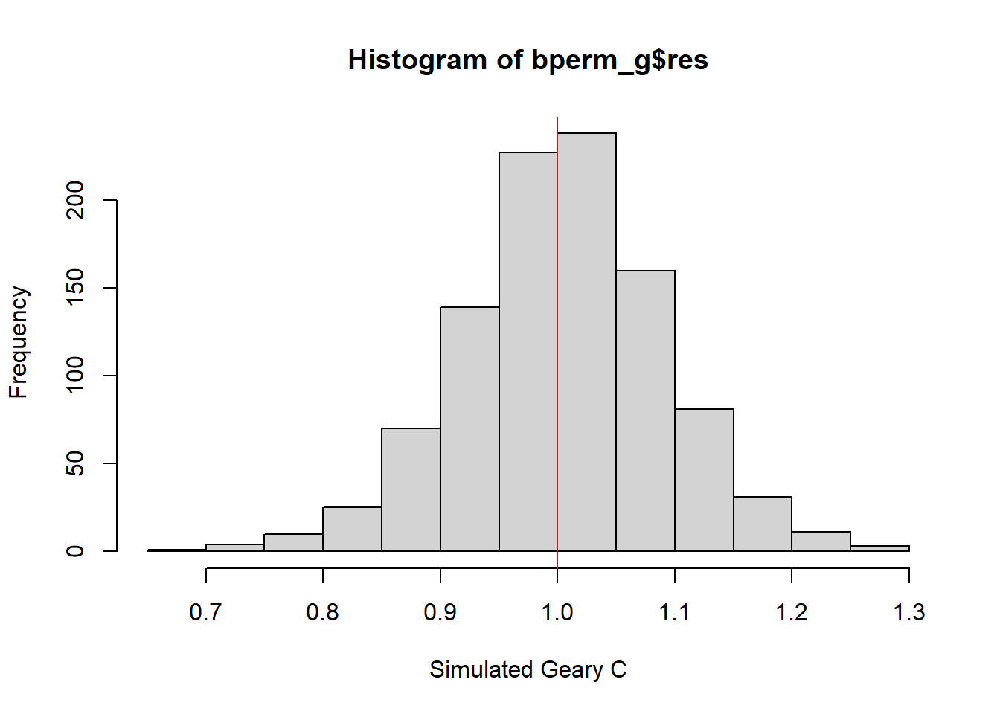
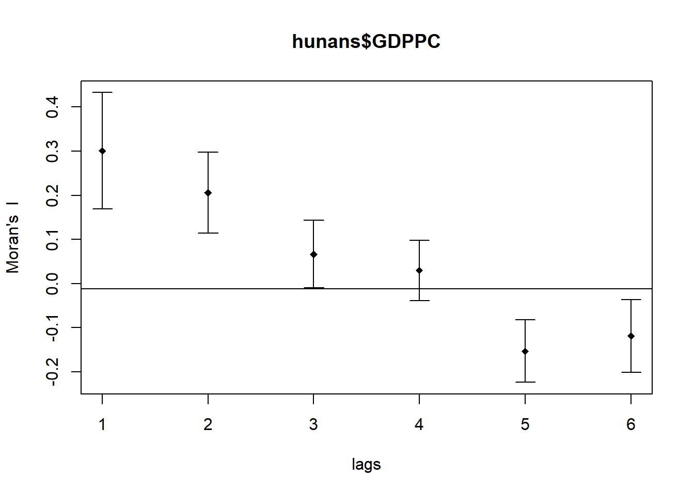
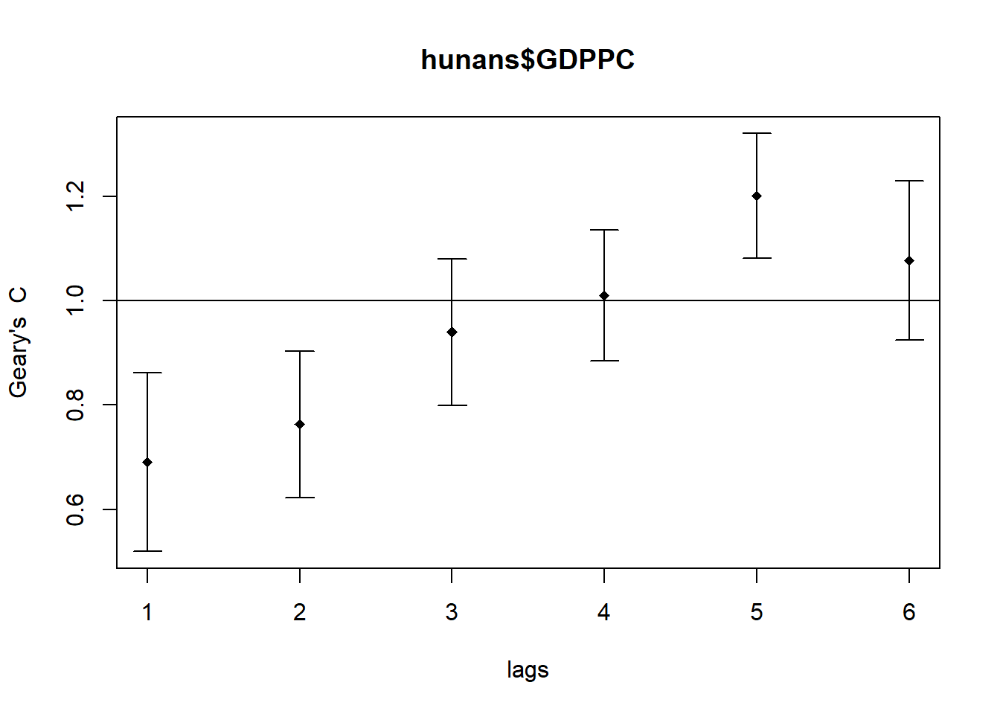
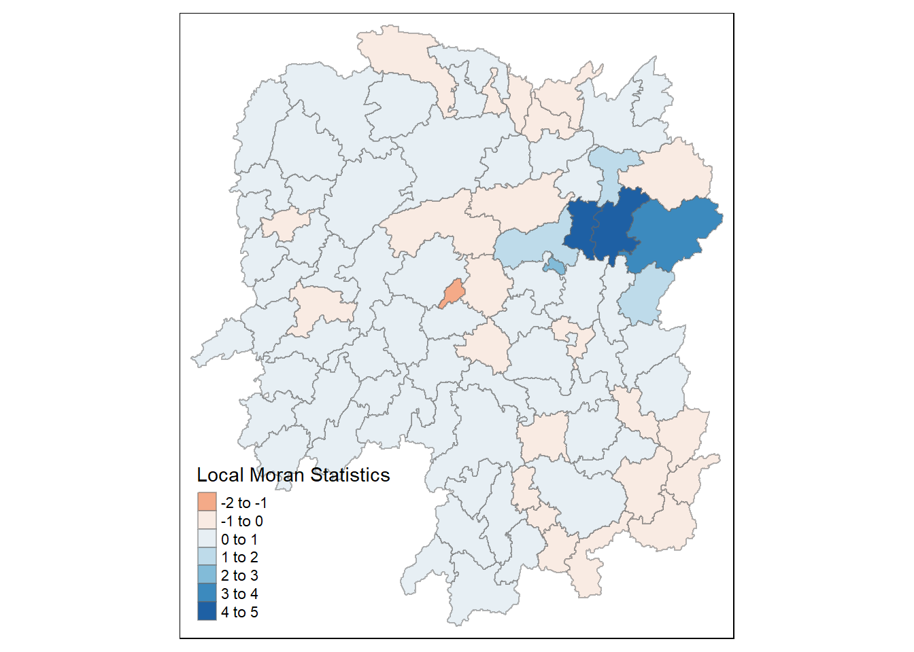
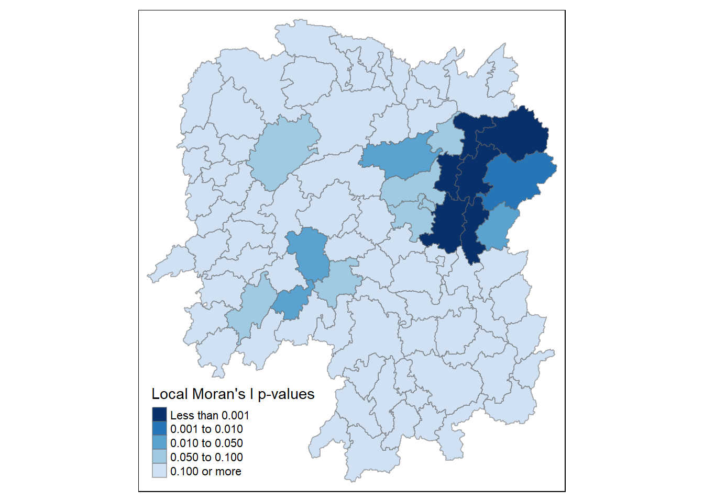
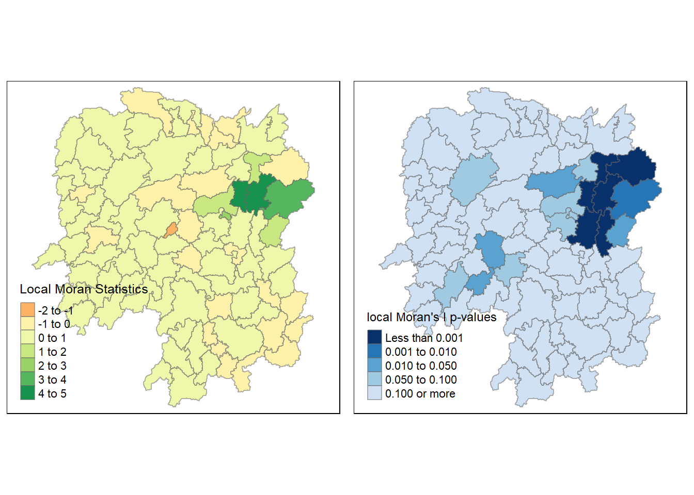
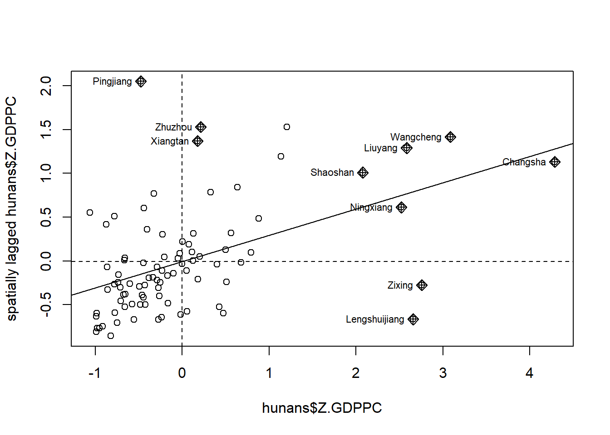
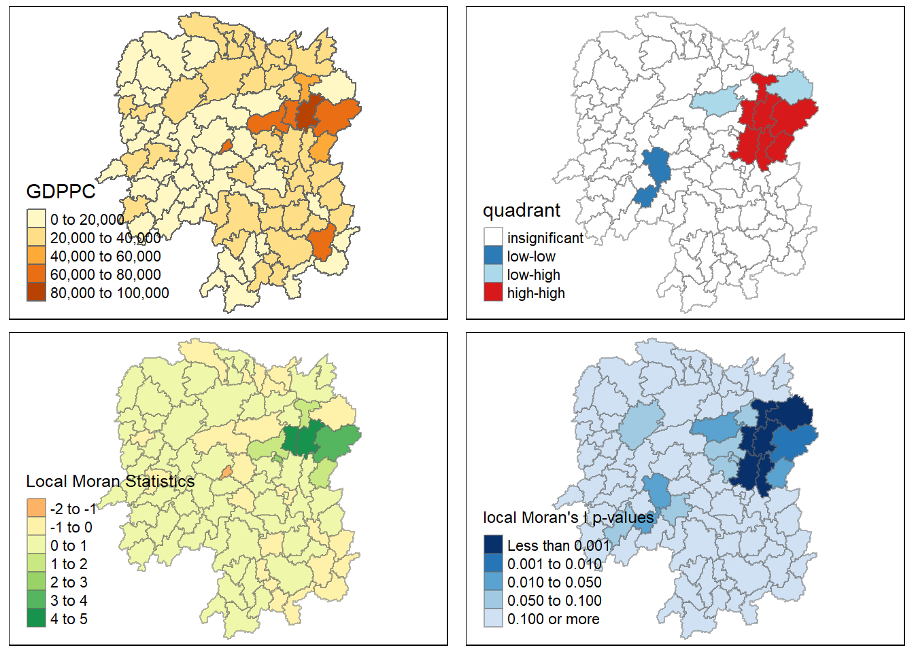
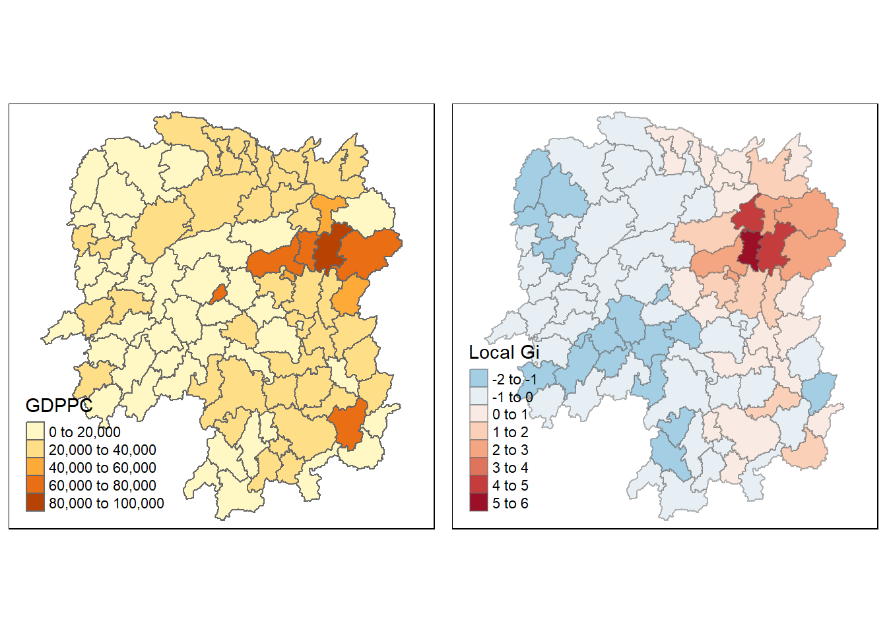
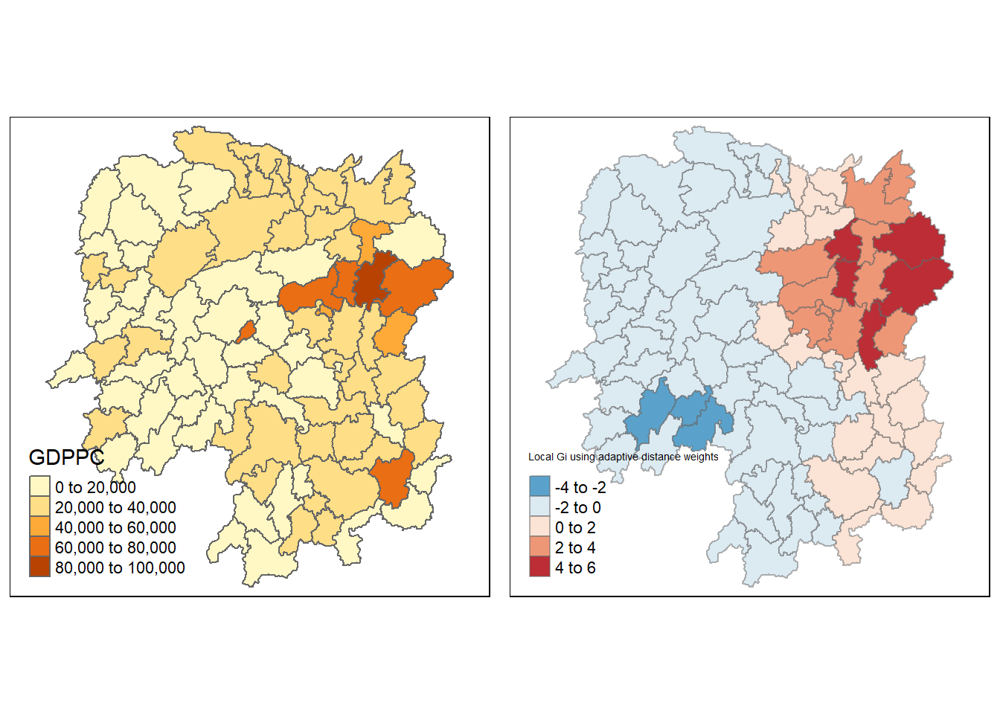

pacman::p_load(sf,spdep,tmap,tidyverse,knitr)Hands-on Exercise 2B: Global and Local Measures of Spatial Autocorrelations
1 Overview
In this hands-on exercise, we will learn how to compute Global and Local Measure of Spatial Autocorrelation (GLSA) using the spdep package.
2 The Analytical Question
In spatial policy, one of the main development objective of the local government and planners is to ensure equal distribution of development in the province. Our task in this study, hence, is to apply appropriate spatial statistical methods to discover if development are even distributed geographically. If the answer is No. Then, our next question will be “is there sign of spatial clustering?”. And, if the answer for this question is yes, then our next question will be “where are these clusters?”
In this case study, we are interested to examine the spatial pattern of a selected development indicator (i.e. GDP per capita) of Hunan Province, People’s Republic of China.
3 Getting Started
3.1 Packages
First, we will import the relevant packages that we will be using for this hands-on exercise.
We will be using the following packages:
sf: to import and handle geospatial data,
tidyverse: to handle and wrangle attribute data,
knitr: to generate tables for matrices,
spdep: to compute spatial weights, global and local spatial autocorrelation statistics; and
tmap: to prepare and plot cartographic quality chropleth map.
3.2 Importing Data
The datasets used in this hands-on exercise are:
Hunan county boundary layer:a geospatial data set in ESRI shapefile formatHunan_2012.csv: an aspatial data set in csv format. It contains selected Hunan’s local development indicators in 2012.
Note
The datasets from this exercise were provided as part of the coursework and downloaded from the student learning portal.
3.2.1 Geospatial Data
First, we will use st_read() of sf package to import Hunan county boundary layer (a shapefile) into R.
hunan <- st_read(dsn = "data/geospatial", layer = "Hunan")Reading layer `Hunan' from data source
`C:\sihuihui\ISSS624\Hands-on_Ex\Hands-on_Ex2\data\geospatial'
using driver `ESRI Shapefile'
Simple feature collection with 88 features and 7 fields
Geometry type: POLYGON
Dimension: XY
Bounding box: xmin: 108.7831 ymin: 24.6342 xmax: 114.2544 ymax: 30.12812
Geodetic CRS: WGS 84glimpse(hunan)Rows: 88
Columns: 8
$ NAME_2 <chr> "Changde", "Changde", "Changde", "Changde", "Changde", "Cha…
$ ID_3 <int> 21098, 21100, 21101, 21102, 21103, 21104, 21109, 21110, 211…
$ NAME_3 <chr> "Anxiang", "Hanshou", "Jinshi", "Li", "Linli", "Shimen", "L…
$ ENGTYPE_3 <chr> "County", "County", "County City", "County", "County", "Cou…
$ Shape_Leng <dbl> 1.869074, 2.360691, 1.425620, 3.474325, 2.289506, 4.171918,…
$ Shape_Area <dbl> 0.10056190, 0.19978745, 0.05302413, 0.18908121, 0.11450357,…
$ County <chr> "Anxiang", "Hanshou", "Jinshi", "Li", "Linli", "Shimen", "L…
$ geometry <POLYGON [°]> POLYGON ((112.0625 29.75523..., POLYGON ((112.2288 …From the output, we know that hunan is a polygon sf dataframe with 88 features and 7 fields. It also uses a WGS84 geometric coordinates system.
3.2.2 Aspatial Data
We will import Hunan_2012.csv into R using read_csv() of readr package.
hunan2012 <- read_csv("data/aspatial/Hunan_2012.csv")glimpse(hunan2012)Rows: 88
Columns: 29
$ County <chr> "Anhua", "Anren", "Anxiang", "Baojing", "Chaling", "Changn…
$ City <chr> "Yiyang", "Chenzhou", "Changde", "Hunan West", "Zhuzhou", …
$ avg_wage <dbl> 30544, 28058, 31935, 30843, 31251, 28518, 54540, 28597, 33…
$ deposite <dbl> 10967.0, 4598.9, 5517.2, 2250.0, 8241.4, 10860.0, 24332.0,…
$ FAI <dbl> 6831.7, 6386.1, 3541.0, 1005.4, 6508.4, 7920.0, 33624.0, 1…
$ Gov_Rev <dbl> 456.72, 220.57, 243.64, 192.59, 620.19, 769.86, 5350.00, 1…
$ Gov_Exp <dbl> 2703.0, 1454.7, 1779.5, 1379.1, 1947.0, 2631.6, 7885.5, 11…
$ GDP <dbl> 13225.0, 4941.2, 12482.0, 4087.9, 11585.0, 19886.0, 88009.…
$ GDPPC <dbl> 14567, 12761, 23667, 14563, 20078, 24418, 88656, 10132, 17…
$ GIO <dbl> 9276.90, 4189.20, 5108.90, 3623.50, 9157.70, 37392.00, 513…
$ Loan <dbl> 3954.90, 2555.30, 2806.90, 1253.70, 4287.40, 4242.80, 4053…
$ NIPCR <dbl> 3528.3, 3271.8, 7693.7, 4191.3, 3887.7, 9528.0, 17070.0, 3…
$ Bed <dbl> 2718, 970, 1931, 927, 1449, 3605, 3310, 582, 2170, 2179, 1…
$ Emp <dbl> 494.310, 290.820, 336.390, 195.170, 330.290, 548.610, 670.…
$ EmpR <dbl> 441.4, 255.4, 270.5, 145.6, 299.0, 415.1, 452.0, 127.6, 21…
$ EmpRT <dbl> 338.0, 99.4, 205.9, 116.4, 154.0, 273.7, 219.4, 94.4, 174.…
$ Pri_Stu <dbl> 54.175, 33.171, 19.584, 19.249, 33.906, 81.831, 59.151, 18…
$ Sec_Stu <dbl> 32.830, 17.505, 17.819, 11.831, 20.548, 44.485, 39.685, 7.…
$ Household <dbl> 290.4, 104.6, 148.1, 73.2, 148.7, 211.2, 300.3, 76.1, 139.…
$ Household_R <dbl> 234.5, 121.9, 135.4, 69.9, 139.4, 211.7, 248.4, 59.6, 110.…
$ NOIP <dbl> 101, 34, 53, 18, 106, 115, 214, 17, 55, 70, 44, 84, 74, 17…
$ Pop_R <dbl> 670.3, 243.2, 346.0, 184.1, 301.6, 448.2, 475.1, 189.6, 31…
$ RSCG <dbl> 5760.60, 2386.40, 3957.90, 768.04, 4009.50, 5220.40, 22604…
$ Pop_T <dbl> 910.8, 388.7, 528.3, 281.3, 578.4, 816.3, 998.6, 256.7, 45…
$ Agri <dbl> 4942.253, 2357.764, 4524.410, 1118.561, 3793.550, 6430.782…
$ Service <dbl> 5414.5, 3814.1, 14100.0, 541.8, 5444.0, 13074.6, 17726.6, …
$ Disp_Inc <dbl> 12373, 16072, 16610, 13455, 20461, 20868, 183252, 12379, 1…
$ RORP <dbl> 0.7359464, 0.6256753, 0.6549309, 0.6544614, 0.5214385, 0.5…
$ ROREmp <dbl> 0.8929619, 0.8782065, 0.8041262, 0.7460163, 0.9052651, 0.7…3.3 Performing Relational Join
We will update the attribute table of hunan’s spatial polygons dataframe with the attribute fields of hunan2012 dataframe using the left_join() of dplyr package.
hunan_joined <- left_join(hunan, hunan2012,
by="County") kable(head(hunan_joined))| NAME_2 | ID_3 | NAME_3 | ENGTYPE_3 | Shape_Leng | Shape_Area | County | City | avg_wage | deposite | FAI | Gov_Rev | Gov_Exp | GDP | GDPPC | GIO | Loan | NIPCR | Bed | Emp | EmpR | EmpRT | Pri_Stu | Sec_Stu | Household | Household_R | NOIP | Pop_R | RSCG | Pop_T | Agri | Service | Disp_Inc | RORP | ROREmp | geometry |
|---|---|---|---|---|---|---|---|---|---|---|---|---|---|---|---|---|---|---|---|---|---|---|---|---|---|---|---|---|---|---|---|---|---|---|---|
| Changde | 21098 | Anxiang | County | 1.869074 | 0.1005619 | Anxiang | Changde | 31935 | 5517.2 | 3541.0 | 243.64 | 1779.5 | 12482.0 | 23667 | 5108.9 | 2806.9 | 7693.7 | 1931 | 336.39 | 270.5 | 205.9 | 19.584 | 17.819 | 148.1 | 135.4 | 53 | 346.0 | 3957.9 | 528.3 | 4524.41 | 14100 | 16610 | 0.6549309 | 0.8041262 | POLYGON ((112.0625 29.75523… |
| Changde | 21100 | Hanshou | County | 2.360691 | 0.1997875 | Hanshou | Changde | 32265 | 7979.0 | 8665.0 | 386.13 | 2062.4 | 15788.0 | 20981 | 13491.0 | 4550.0 | 8269.9 | 2560 | 456.78 | 388.8 | 246.7 | 42.097 | 33.029 | 240.2 | 208.7 | 95 | 553.2 | 4460.5 | 804.6 | 6545.35 | 17727 | 18925 | 0.6875466 | 0.8511756 | POLYGON ((112.2288 29.11684… |
| Changde | 21101 | Jinshi | County City | 1.425620 | 0.0530241 | Jinshi | Changde | 28692 | 4581.7 | 4777.0 | 373.31 | 1148.4 | 8706.9 | 34592 | 10935.0 | 2242.0 | 8169.9 | 848 | 122.78 | 82.1 | 61.7 | 8.723 | 7.592 | 81.9 | 43.7 | 77 | 92.4 | 3683.0 | 251.8 | 2562.46 | 7525 | 19498 | 0.3669579 | 0.6686757 | POLYGON ((111.8927 29.6013,… |
| Changde | 21102 | Li | County | 3.474324 | 0.1890812 | Li | Changde | 32541 | 13487.0 | 16066.0 | 709.61 | 2459.5 | 20322.0 | 24473 | 18402.0 | 6748.0 | 8377.0 | 2038 | 513.44 | 426.8 | 227.1 | 38.975 | 33.938 | 268.5 | 256.0 | 96 | 539.7 | 7110.2 | 832.5 | 7562.34 | 53160 | 18985 | 0.6482883 | 0.8312558 | POLYGON ((111.3731 29.94649… |
| Changde | 21103 | Linli | County | 2.289506 | 0.1145036 | Linli | Changde | 32667 | 564.1 | 7781.2 | 336.86 | 1538.7 | 10355.0 | 25554 | 8214.0 | 358.0 | 8143.1 | 1440 | 307.36 | 272.2 | 100.8 | 23.286 | 18.943 | 129.1 | 157.2 | 99 | 246.6 | 3604.9 | 409.3 | 3583.91 | 7031 | 18604 | 0.6024921 | 0.8856065 | POLYGON ((111.6324 29.76288… |
| Changde | 21104 | Shimen | County | 4.171918 | 0.3719471 | Shimen | Changde | 33261 | 8334.4 | 10531.0 | 548.33 | 2178.8 | 16293.0 | 27137 | 17795.0 | 6026.5 | 6156.0 | 2502 | 392.05 | 329.6 | 193.8 | 29.245 | 26.104 | 190.6 | 184.7 | 122 | 399.2 | 6490.7 | 600.5 | 5266.51 | 6981 | 19275 | 0.6647794 | 0.8407091 | POLYGON ((110.8825 30.11675… |
As we intend to only show the distribution of Gross Domestic Product Per Capita (GDPPC), we can drop some of the columns that we will not be using by selecting the columns that we want using select().
hunans <- hunan_joined %>%
select(c(1:4, 7, 15)) kable(head(hunans))| NAME_2 | ID_3 | NAME_3 | ENGTYPE_3 | County | GDPPC | geometry |
|---|---|---|---|---|---|---|
| Changde | 21098 | Anxiang | County | Anxiang | 23667 | POLYGON ((112.0625 29.75523… |
| Changde | 21100 | Hanshou | County | Hanshou | 20981 | POLYGON ((112.2288 29.11684… |
| Changde | 21101 | Jinshi | County City | Jinshi | 34592 | POLYGON ((111.8927 29.6013,… |
| Changde | 21102 | Li | County | Li | 24473 | POLYGON ((111.3731 29.94649… |
| Changde | 21103 | Linli | County | Linli | 25554 | POLYGON ((111.6324 29.76288… |
| Changde | 21104 | Shimen | County | Shimen | 27137 | POLYGON ((110.8825 30.11675… |
4 Visualising Regional Development Indicator
We will show the distribution of Gross Domestic Product per Capita (GDPPC) 2012 using qtm() of tmap package using the following code chunk.
equal <- tm_shape(hunans) +
tm_fill("GDPPC",
n = 5,
style = "equal") +
tm_borders(alpha = 0.5) +
tm_layout(main.title = "Equal interval classification")
quantile <- tm_shape(hunans) +
tm_fill("GDPPC",
n = 5,
style = "quantile") +
tm_borders(alpha = 0.5) +
tm_layout(main.title = "Equal quantile classification")
tmap_arrange(equal,
quantile,
asp=1,
ncol=2)
5 Global Spatial Autocorrelation
In this section, we will learn how to compute global spatial autocorrelation statistics and perform spatial complete randomness test for global spatial autocorrelation.
5.1 Computing Contiguity Spatial Weights
Before we can compute the global spatial autocorrelation statistics, we need to construct spatial weights of the study area. Spatial weights is used to define the neighbourhood relationships between the geographical units (i.e., county) in the study area.
Note
To learn more about computing spatial weights, please refer to Hands-on Exercise 2a.
In the code chunk below, poly2nb() of spdep package is used to compute contiguity weight matrices for the study area. This function builds a neighbours list based on regions with contiguous boundaries.
As mentioned in Hands-on Exercise 2a, poly2nb()’s default argument for Queen is queen=TRUE, meaning that the function computes Queen contiguity by default. If we want to compute Rook contiguity, we need to set queen=FALSE.
We use the following code chunk to compute Queen contiguity weight matrix.
wm_q <- poly2nb(hunans, queen = TRUE)
summary(wm_q)Neighbour list object:
Number of regions: 88
Number of nonzero links: 448
Percentage nonzero weights: 5.785124
Average number of links: 5.090909
Link number distribution:
1 2 3 4 5 6 7 8 9 11
2 2 12 16 24 14 11 4 2 1
2 least connected regions:
30 65 with 1 link
1 most connected region:
85 with 11 linksThe summary report above shows that there are 88 regions in Hunan. The most connected region has 11 neighbours and there are 2 regions with only 1 neighbours. On average, each region has 5.090909 neighbours.
5.2 Row-standardised Weight Matrix
Next, we need to assign weights to each neighbouring polygon. We will assign each neighbouring polygon with equal weight (style="W"). This is accomplished by assigning the fraction 1/(total number of neighbours) to each neighbouring county then summing the weighted income values.
While assigning each neighbouring polygon with the same weight is most intuitive way to summarise the neighbours’ values, polygons which are situated along the edges of the map will base their lagged values on fewer polygons (due to the nature of their positions on the map). This could cause potential over- or under- estimation of the true nature of the spatial autocorrelation in the data.
For the purpose of this hands-on exercise, we will use the style="W" option for simplicity sake.
Note
The nb2listw() function can take in the following styles:
B is the basic binary coding
W is row standardised (sums over all links to n)
C is globally standardised (sums over all links to n)
U is equal to C divided by the number of neighbours (sums over all links to unity)
S is the variance-stabilizing coding scheme proposed by Tiefelsdorf et al. 1999
minmax is based on Kelejian and Prucha (2010), and divides the weights by the minimum of the maximum row sums and maximum column sums of the input weights. It is similar to the C and U styles.
rswm_q <- nb2listw(wm_q, style="W", zero.policy = TRUE)
rswm_qCharacteristics of weights list object:
Neighbour list object:
Number of regions: 88
Number of nonzero links: 448
Percentage nonzero weights: 5.785124
Average number of links: 5.090909
Weights style: W
Weights constants summary:
n nn S0 S1 S2
W 88 7744 88 37.86334 365.9147
Warning
The zero.policy=TRUE option allows for lists of non-neighbors. This should be used with caution since the user may not be aware of missing neighbors in their dataset however, a zero.policy = FALSE would return an error.
5.3 Global Spatial Autocorrelation: Moran’s I
In this section, we will learn how to perform Moran’s I statistics testing using moran.test() of spdep package.
Moran’s test for spatial autocorrelation using a spatial weights matrix in weights list form. The assumptions underlying the test are sensitive to the form of the graph of neighbour relationships and other factors, and results may be checked against those of moran.mc permutations.
5.3.1 Moran’s I test
The code chunk below performs Moran’s I statistical testing using moran.test() of spdep package.
moran.test(hunans$GDPPC,
listw = rswm_q,
zero.policy = TRUE,
alternative = "greater",
na.action = na.omit)
Moran I test under randomisation
data: hunans$GDPPC
weights: rswm_q
Moran I statistic standard deviate = 4.7351, p-value = 1.095e-06
alternative hypothesis: greater
sample estimates:
Moran I statistic Expectation Variance
0.300749970 -0.011494253 0.004348351 The Moran I test is a measure of spatial autocorrelation, which assesses whether the observed pattern in the spatial distribution of a variable is different from what would be expected under spatial randomness.
From the above outcome, we see that the Moran I statistic is 0.30075, and its standard deviation is 4.7351. The p-value is 1.095e-06, which is very small. Assuming that our chosen significance level is 0.05, we would reject the null hypothesis since p-value < 0.05, suggesting strong evidence against the null hypothesis of spatial randomness.
The alternative hypothesis is “greater”, indicating that we are testing if there is a positive spatial autocorrelation (i.e., similar values are close to each other). We can specify the alternative hypothesis using alternative =. The default value is "greater", but it can be changed to "less" or "two.sided".
Hence, the results suggests that there is a significant positive spatial autocorrelation in the variable GDPPC and the observed spatial pattern is not likely to have occurred by random chance.
5.3.2 Computing Monte Carlo Moran’s I
If we doubt that the assumptions of Moran’s I are true (normality and randomisation), we can use a Monte Carlo simulation. The purpose of the Monte Carlo simulation is to estimate the significance of the Moran I statistic through random permutations. We will: - Simulate Moran’s I n times under the assumption of no spatial pattern, - Assign all regions the mean value, - Calculate Moran’s I, - Compare the actual value of Moran’s I to randomly simulated distribution to obtain p-value (pseudo significance).
The code chunk below performs permutation test for Moran’s I statistic using moran.mc() of spdep package. A total of 1000 simulation will be performed.
set.seed(1234)
bperm = moran.mc(hunans$GDPPC,
listw = rswm_q,
nsim = 999,
zero.policy = TRUE,
na.action = na.omit)
Note
The simulation was run with 999 permutations (nsim = 999) plus the observed statistic, making a total of 1000 simulations.
The Monte Carlo simulation supports the earlier findings from the Moran I test. The small p-value (0.001) indicates that the observe spatial pattern in the variable GDPPC is unlikely due to random chance and there is a strong evidence of positive spatial autocorrelation.
5.3.3 Visualising Monte Carlo Moran’s I
It is a good practice for us the examine the simulated Moran’s I test statistics in greater detail. This can be achieved by plotting the distribution of the statistical values as a histogram by using the code chunk below.
mean(bperm$res[1:999])[1] -0.01504572var(bperm$res[1:999])[1] 0.004371574summary(bperm$res[1:999]) Min. 1st Qu. Median Mean 3rd Qu. Max.
-0.18339 -0.06168 -0.02125 -0.01505 0.02611 0.27593 We will use hist() and abline() of R Graphics to plot the histogram.
hist(bperm$res,
freq=TRUE,
breaks = 20,
xlab = "Simulated Moran's I")
abline(v=0,
col="red")
The observed statistic from Monte Carlo Moran’s I Simulation is 0.300749970, which falls way to the right of the histogram distribution suggesting that GDPPC values are clustered (a positive Moran’s I value suggests clustering while a negative Moran’sI value suggests dispersion).
5.4 Global Spatial Autocorrelation: Geary’s C
In this section, we will learn how to perform Geary’s c statistics testing by using appropriate functions of spdep package.
5.4.1 Geary’s C test
The code chunk below performs Geary’s C test for spatial autocorrelation by using geary.test() of spdep package.
geary.test(hunans$GDPPC, listw = rswm_q)
Geary C test under randomisation
data: hunans$GDPPC
weights: rswm_q
Geary C statistic standard deviate = 3.6108, p-value = 0.0001526
alternative hypothesis: Expectation greater than statistic
sample estimates:
Geary C statistic Expectation Variance
0.6907223 1.0000000 0.0073364 The p-value associated with the Geary C test is 0.0001526, which is very small and less than 0.05. This means that we can reject the null hypothesis of spatial randomness.
The alternative hypothesis’s default value is “Expectation greater than statistic”, indicating that we are testing whether the expected value of Geary’s C is greater than the observed statistic. This suggests positive spatial autocorrelation.
The Geary’s C test result suggests that there is significant positive spatial autocorrelation in the variable GDPPC in the hunans dataset based on the specified spatial weights matrix. The observed spatial pattern is not likely to have occurred by random chance.
5.4.2 Computing Monte Carlo Geary’s C
The code chunk below performs permutation test for Geary’s C statistuc using geary.mc() of spdep package.
set.seed(1234)
bperm_g = geary.mc(hunans$GDPPC,
listw = rswm_q,
nsim = 999)
bperm
Monte-Carlo simulation of Moran I
data: hunans$GDPPC
weights: rswm_q
number of simulations + 1: 1000
statistic = 0.30075, observed rank = 1000, p-value = 0.001
alternative hypothesis: greater5.4.3 Visualising Monte Carlo Geary’s C
We will plot a histogram to reveal the distribution of the simulated values using the following code chunks.
mean(bperm_g$res[1:999])[1] 1.004402var(bperm_g$res[1:999])[1] 0.007436493summary(bperm_g$res[1:999]) Min. 1st Qu. Median Mean 3rd Qu. Max.
0.7142 0.9502 1.0052 1.0044 1.0595 1.2722 hist(bperm_g$res, freq = TRUE, breaks = 20, xlab="Simulated Geary C")
abline(v=1, col = "red")
6 Spatial Correlogram
Spatial correlograms are great to examine patterns of spatial autocorrelation in your data or model residuals. They show how correlated are pairs of spatial observations when you increase the distance (lag) between them - they are plots of some index of autocorrelation (Moran’s I or Geary’s c) against distance.Although correlograms are not as fundamental as variograms (a keystone concept of geostatistics), they are very useful as an exploratory and descriptive tool. For this purpose they actually provide richer information than variograms.
6.1 Compute Moran’s I Correlogram
We will use sp.correlogram() of spdep package to compute a 6-lag spatial correlogram of GDPPC for Moran’s I (method = "I").We will then use the plot() function of base Graph to plot the output.
MI_corr <- sp.correlogram(wm_q, hunans$GDPPC,
order = 6, method = "I",
style = "W")
plot(MI_corr)
Plotting the output might not allow us to provide complete interpretation because not all autocorrelation values are statistically significant. Hence, it is important for us to examine the full analysis report by printing out the analysis results as in the code chunk below.
print(MI_corr)Spatial correlogram for hunans$GDPPC
method: Moran's I
estimate expectation variance standard deviate Pr(I) two sided
1 (88) 0.3007500 -0.0114943 0.0043484 4.7351 2.189e-06 ***
2 (88) 0.2060084 -0.0114943 0.0020962 4.7505 2.029e-06 ***
3 (88) 0.0668273 -0.0114943 0.0014602 2.0496 0.040400 *
4 (88) 0.0299470 -0.0114943 0.0011717 1.2107 0.226015
5 (88) -0.1530471 -0.0114943 0.0012440 -4.0134 5.984e-05 ***
6 (88) -0.1187070 -0.0114943 0.0016791 -2.6164 0.008886 **
---
Signif. codes: 0 '***' 0.001 '**' 0.01 '*' 0.05 '.' 0.1 ' ' 16.2 Compute Geary’s C Correlogram and Plot
We will use sp.correlogram() of spdep package to compute a 6-lag spatial correlogram of GDPPC for Geary’s C (method = "C").We will then use the plot() function of base Graph to plot the output.
GC_corr <- sp.correlogram(wm_q,
hunans$GDPPC,
order = 6,
method = "C",
style = "W")
plot(GC_corr)
Similar to the previous step, we will print out the analysis report by using the code chunk below.
print(GC_corr)Spatial correlogram for hunans$GDPPC
method: Geary's C
estimate expectation variance standard deviate Pr(I) two sided
1 (88) 0.6907223 1.0000000 0.0073364 -3.6108 0.0003052 ***
2 (88) 0.7630197 1.0000000 0.0049126 -3.3811 0.0007220 ***
3 (88) 0.9397299 1.0000000 0.0049005 -0.8610 0.3892612
4 (88) 1.0098462 1.0000000 0.0039631 0.1564 0.8757128
5 (88) 1.2008204 1.0000000 0.0035568 3.3673 0.0007592 ***
6 (88) 1.0773386 1.0000000 0.0058042 1.0151 0.3100407
---
Signif. codes: 0 '***' 0.001 '**' 0.01 '*' 0.05 '.' 0.1 ' ' 17 Cluster and Outlier Analysis
Local Indicators of Spatial Association (LISA) are statistics that evaluate the existence of clusters in the spatial arrangement of a given variable. For instance, if we are studying cancer rates among census tracts in a given city, local clusters in the rates mean that there are areas that have higher or lower rates than is to be expected by chance alone; that is, the values occurring are above or below those of a random distribution in space.
In this section, we will learn how to apply appropriate LISA, especially local Moran’I, to detect clusters and/or outliers from GDPPC of Hunan Province.
7.1 Computing Local Moran’s I
To compute local Moran’s I, the localmoran() function of spdep will be used. localmoran() computes li values, given a set of zi values and a listw object providing neighbouring weights information for the polygon associated with the zi values.
The code chunk below computes local Moran’s I of GDPPC at the county level.
fips <- order(hunans$County)
localMI <- localmoran(hunans$GDPPC, rswm_q)
head(localMI) Ii E.Ii Var.Ii Z.Ii Pr(z != E(Ii))
1 -0.001468468 -2.815006e-05 4.723841e-04 -0.06626904 0.9471636
2 0.025878173 -6.061953e-04 1.016664e-02 0.26266425 0.7928094
3 -0.011987646 -5.366648e-03 1.133362e-01 -0.01966705 0.9843090
4 0.001022468 -2.404783e-07 5.105969e-06 0.45259801 0.6508382
5 0.014814881 -6.829362e-05 1.449949e-03 0.39085814 0.6959021
6 -0.038793829 -3.860263e-04 6.475559e-03 -0.47728835 0.6331568localmoran() function returns a matrix of values with the following columns:
li: the local Moran’s I statistics
E.li: the expectation of local moran statistic under the randomisation hypothesis
Var.li: the variance of local moran statistic under the randomisation hypothesis
Z.li: the standard deviation of local moran statistic
Pr(): the p-value of local moran statistic
We use printCoefmat() to list the content of the local Moran matrix.
7.2 Mapping Local Moran’s I values and p-values
Before mapping the local Moran’s I map, we append the local Moran’s I dataframe (localMI) onto the Hunan Spatial Polygon Data Frame (hunans).
hunan.localMI <- cbind(hunans,localMI) %>%
rename(Pr.Ii = Pr.z....E.Ii..)We then use choropleth mapping functions of tmap package to plot the local Moran’s I values using the following code chunk:
tm_shape(hunan.localMI) +
tm_fill(col= "Ii",
style = "pretty",
palette = "RdBu",
title = "Local Moran Statistics") +
tm_borders(alpha = 0.5)
The choropleth map shows that there are both positive and negative li values. Hence, we should consider the p-values for each of these values to determine their significance.
The following code chunk creates a choropleth map of Moran’s I p-values using tmap package.
tm_shape(hunan.localMI) +
tm_fill(col= "Pr.Ii",
breaks = c(-Inf, 0.001, 0.01, 0.05, 0.1, Inf),
palette = "-Blues",
title = "Local Moran's I p-values") +
tm_borders(alpha = 0.5)
For effective interpretation, we plot both the local Moran’s I values map and its corresponding p-values map next to each other.
localMI.map <- tm_shape(hunan.localMI) +
tm_fill(col = "Ii",
style = "pretty",
title = "Local Moran Statistics") +
tm_borders(alpha = 0.5)
pvalue.map <- tm_shape(hunan.localMI) +
tm_fill(col = "Pr.Ii",
breaks=c(-Inf, 0.001, 0.01, 0.05, 0.1, Inf),
palette="-Blues",
title = "local Moran's I p-values") +
tm_borders(alpha = 0.5)
tmap_arrange(localMI.map, pvalue.map, asp=1, ncol=2)
8 Creating a LISA Cluster Map
The LISA Cluster Map shows the significant locations color coded by type of spatial autocorrelation. Before we generate the LISA cluster map, we would need to plot the Moran Scatterplot.
###Plotting Moran Scatterplot The Moran scatterplot is an illustration of the relationship between the values of the chosen attribute at each location and the average value of the same attribute at neighboring locations.
nci <- moran.plot(hunans$GDPPC, rswm_q,
labels=as.character(hunans$County),
xlab="GDPPC 2012",
ylab="Spatially Lag GDPPC 2012")
Notice that the plot is split in 4 quadrants. The top right corner belongs to areas that have high GDPPC and are surrounded by other areas that have the average level of GDPPC.
8.1 Plotting Moran Scatterplot with Standardised Variable
We will use scale() to center and scale the variable. Here centering is done by subtracting the mean (omitting NAs) the corresponding columns, and scaling is done by dividing the (centered) variable by their standard deviations.
hunans$Z.GDPPC <- scale(hunans$GDPPC) %>%
as.vector()The as.vector() added to the end if to make sure that the data type we get from this vector maps neatly onto our dataframe.
We now plot the Moran scatterplot with standardised variable using the following code chunk.
nci2 <- moran.plot(hunans$Z.GDPPC, rswm_q,
labels = as.character((hunans$County), xlab= "z-GDPPC 2012", ylab="Spatially Lag z-GDPPC 2012"))
8.2 Preparing LISA Map Classes
First we generate the quadrants of the LISA cluster map.
quadrant <-vector(mode="numeric", length=nrow(localMI))Next, we derive the spatially legged variable of interest (i.e., GDPPC) and centers the spatially lagged variable around its mean.
hunans$lag_GDPPC <- lag.listw(rswm_q, hunans$GDPPC)
DV <- hunan$lag_GDPPC - mean(hunans$lag_GDPPC)Then, we center the local Moran’s around the mean.
LM_I <- localMI[,1] - mean(localMI[,1])Next, we will set a statistical significance level for the local Moran.
signif <- 0.05We also define the low-low(1), low-high(2), high-low(3) and high-high(4) categories.
quadrant[DV <0 & LM_I>0] <- 1
quadrant[DV >0 & LM_I<0] <- 2
quadrant[DV <0 & LM_I<0] <- 3
quadrant[DV >0 & LM_I>0] <- 4 Lastly,we place non-significant Moran in the category 0.
quadrant[localMI[,5]>signif] <- 0quadrant <- vector(mode="numeric",length=nrow(localMI))
hunans$lag_GDPPC <- lag.listw(rswm_q, hunans$GDPPC)
DV <- hunans$lag_GDPPC - mean(hunans$lag_GDPPC)
LM_I <- localMI[,1]
signif <- 0.05
quadrant[DV <0 & LM_I>0] <- 1
quadrant[DV >0 & LM_I<0] <- 2
quadrant[DV <0 & LM_I<0] <- 3
quadrant[DV >0 & LM_I>0] <- 4
quadrant[localMI[,5]>signif] <- 08.3 Plotting LISA Map
Now, we can build the LISA map by using the following code chunk.
hunan.localMI$quadrant <- quadrant
colors <- c("#ffffff", "#2c7bb6", "#abd9e9", "#fdae61", "#d7191c")
clusters <- c("insignificant", "low-low", "low-high", "high-low", "high-high")
tm_shape(hunan.localMI) +
tm_fill(col = "quadrant",
style = "cat",
palette = colors[c(sort(unique(quadrant)))+1],
labels = clusters[c(sort(unique(quadrant)))+1],
popup.vars = c("")) +
tm_view(set.zoom.limits = c(11,17)) +
tm_borders(alpha=0.5)
For effective interpretation,we plot both the local Moran’s I values map and its corresponding p-values map next to each other.
gdppc <- qtm(hunans, "GDPPC")
hunan.localMI$quadrant <- quadrant
colors <- c("#ffffff", "#2c7bb6", "#abd9e9", "#fdae61", "#d7191c")
clusters <- c("insignificant", "low-low", "low-high", "high-low", "high-high")
LISAmap <- tm_shape(hunan.localMI) +
tm_fill(col = "quadrant",
style = "cat",
palette = colors[c(sort(unique(quadrant)))+1],
labels = clusters[c(sort(unique(quadrant)))+1],
popup.vars = c("")) +
tm_view(set.zoom.limits = c(11,17)) +
tm_borders(alpha=0.5)
tmap_arrange(gdppc, LISAmap,
asp=1, ncol=2)
We can also include the local Moran’s I map and p-value map as shown below for easy comparison.
gdppc <- qtm(hunans, "GDPPC")
hunan.localMI$quadrant <- quadrant
colors <- c("#ffffff", "#2c7bb6", "#abd9e9", "#fdae61", "#d7191c")
clusters <- c("insignificant", "low-low", "low-high", "high-low", "high-high")
LISAmap <- tm_shape(hunan.localMI) +
tm_fill(col = "quadrant",
style = "cat",
palette = colors[c(sort(unique(quadrant)))+1],
labels = clusters[c(sort(unique(quadrant)))+1],
popup.vars = c("")) +
tm_view(set.zoom.limits = c(11,17)) +
tm_borders(alpha=0.5)
localMI.map <- tm_shape(hunan.localMI) +
tm_fill(col = "Ii",
style = "pretty",
title = "Local Moran Statistics") +
tm_borders(alpha = 0.5)
pvalue.map <- tm_shape(hunan.localMI) +
tm_fill(col = "Pr.Ii",
breaks=c(-Inf, 0.001, 0.01, 0.05, 0.1, Inf),
palette="-Blues",
title = "local Moran's I p-values") +
tm_borders(alpha = 0.5)
tmap_arrange(gdppc,LISAmap,localMI.map, pvalue.map)
9 Hot Spot and Cold Spot Area Analysis
Besides detecting cluster and outliers, localised spatial statistics can be also used to detect hot spot and/or cold spot areas.
The term ‘hot spot’ has been used generically across disciplines to describe a region or value that is higher relative to its surroundings (Lepers et al 2005, Aben et al 2012, Isobe et al 2015).
9.1 Getis and Ord’s G-Statistics
The Getis and Ord’s G-statistics (Getis and Ord, 1972; Ord and Getis, 1995) looks at neighbours within a defined proximity to identify where either high or low values clutser spatially. Here, statistically significant hot-spots are recognised as areas of high values where other areas within a neighbourhood range also share high values too.
The analysis consists of three steps:
- Deriving spatial weight matrix
- Computing Gi statistics
- Mapping Gi statistics
9.2 Deriving Distance-based Weight Matrix
First, we need to define a new set of neighbours. Whist the spatial autocorrelation considered units which shared borders, for Getis-Ord we are defining neighbours based on distance.
There are two type of distance-based proximity matrix, they are:
- fixed distance weight matrix; and
- adaptive distance weight matrix.
9.2.1 Deriving the centroid
We will need points to associate with each polygon before we can make our connectivity graph. We will need to run st_centroid() and also use a mapping function. The mapping function applies a given function to each element of a vector and returns a vector of the same length.
To get the longtitude values, we map the st_centroid() function over the geometry column of hunan and access the longitude value through the double bracket notation [[]] and 1. This allows us to get only the longitude, which is the first value in each centroid.
longitude <- map_dbl(hunans$geometry, ~st_centroid(.x)[[1]])To get the latitude, we will use change the “1” in the double bracket notation to “2” since latitude is the second value in each centroid.
latitude <- map_dbl(hunan$geometry, ~st_centroid(.x)[[2]])Now that we have latitude and longitude, we use cbind() to put longitude and latitude into the same object.
coords <- cbind(longitude, latitude)9.2.2 Determine the cut-off distance
First, we need to determine the upper limit for distance band using the steps below.
Return a matrix with the indices of points belonging to the set of the k nearest neighbours of each other using knearneigh() of spdep.
Convert the k-nearest neighbour object returned by knearneigh() into a neighbours list of class nb with a list of integer vectors containing neighbour region number ids using knn2nb().
Return the length of neighbour relationship edges using nbdists() of spdep. This function returns the Euclidean distances along the links in a list of the same form as the neighbours list. If longlat=TRUE, Great Circle distances are used.
Remove the list structure of the returned object using unlist().
k1 <- knn2nb(knearneigh(coords))
k1dists <- unlist(nbdists(k1, coords, longlat = TRUE))
summary(k1dists) Min. 1st Qu. Median Mean 3rd Qu. Max.
24.79 32.57 38.01 39.07 44.52 61.79 The summary report shows that the largest first nearest neighbour distance is 61.79 km, so using this as the upper threshold gives certainty that all units will have at least one neighbour.
9.2.3 Computing the fixed distance weight matrix
We will now compute the distance weight matrix using dnearneigh() and the following code chunk.
wm_d62 <- dnearneigh(coords, 0, 62, longlat = TRUE)
wm_d62Neighbour list object:
Number of regions: 88
Number of nonzero links: 324
Percentage nonzero weights: 4.183884
Average number of links: 3.681818 From the above output, we know that there are 88 regions in Hunan and on average each region has 3.68 neighbours.
Next, nb2listw() is used to convert the nb object into spatial weights object.
wm62_lw <- nb2listw(wm_d62, style = "B")
summary(wm62_lw)Characteristics of weights list object:
Neighbour list object:
Number of regions: 88
Number of nonzero links: 324
Percentage nonzero weights: 4.183884
Average number of links: 3.681818
Link number distribution:
1 2 3 4 5 6
6 15 14 26 20 7
6 least connected regions:
6 15 30 32 56 65 with 1 link
7 most connected regions:
21 28 35 45 50 52 82 with 6 links
Weights style: B
Weights constants summary:
n nn S0 S1 S2
B 88 7744 324 648 54409.3 Computing adaptive distance weight matrix
One of the characteristics of fixed distance weight matrix is that more densely settled areas (usually the urban areas) tend to have more neighbours and the less densely settled areas (usually the rural counties) tend to have lesser neighbours. Having many neighbours smoothens the neighbour relationship across more neighbours.
We can control the numbers of neighbours directly using k-nearest neighbours, either accepting asymmetric neighbours or imposing symmetry as shown in the code chunk below.
knn8 <- knn2nb(knearneigh(coords, k=8))
knn8Neighbour list object:
Number of regions: 88
Number of nonzero links: 704
Percentage nonzero weights: 9.090909
Average number of links: 8
Non-symmetric neighbours listNext, nb2listw() is used to convert the nb object into spatial weights object.
knn8_lw <- nb2listw(knn8, style = 'B')
summary(knn8_lw)Characteristics of weights list object:
Neighbour list object:
Number of regions: 88
Number of nonzero links: 704
Percentage nonzero weights: 9.090909
Average number of links: 8
Non-symmetric neighbours list
Link number distribution:
8
88
88 least connected regions:
1 2 3 4 5 6 7 8 9 10 11 12 13 14 15 16 17 18 19 20 21 22 23 24 25 26 27 28 29 30 31 32 33 34 35 36 37 38 39 40 41 42 43 44 45 46 47 48 49 50 51 52 53 54 55 56 57 58 59 60 61 62 63 64 65 66 67 68 69 70 71 72 73 74 75 76 77 78 79 80 81 82 83 84 85 86 87 88 with 8 links
88 most connected regions:
1 2 3 4 5 6 7 8 9 10 11 12 13 14 15 16 17 18 19 20 21 22 23 24 25 26 27 28 29 30 31 32 33 34 35 36 37 38 39 40 41 42 43 44 45 46 47 48 49 50 51 52 53 54 55 56 57 58 59 60 61 62 63 64 65 66 67 68 69 70 71 72 73 74 75 76 77 78 79 80 81 82 83 84 85 86 87 88 with 8 links
Weights style: B
Weights constants summary:
n nn S0 S1 S2
B 88 7744 704 1300 2301410 Computing Gi Statistics
10.1 Gi statistics using fixed distance
fips <- order(hunans$County)
gi.fixed <- localG(hunans$GDPPC, wm62_lw)
gi.fixed [1] 0.436075843 -0.265505650 -0.073033665 0.413017033 0.273070579
[6] -0.377510776 2.863898821 2.794350420 5.216125401 0.228236603
[11] 0.951035346 -0.536334231 0.176761556 1.195564020 -0.033020610
[16] 1.378081093 -0.585756761 -0.419680565 0.258805141 0.012056111
[21] -0.145716531 -0.027158687 -0.318615290 -0.748946051 -0.961700582
[26] -0.796851342 -1.033949773 -0.460979158 -0.885240161 -0.266671512
[31] -0.886168613 -0.855476971 -0.922143185 -1.162328599 0.735582222
[36] -0.003358489 -0.967459309 -1.259299080 -1.452256513 -1.540671121
[41] -1.395011407 -1.681505286 -1.314110709 -0.767944457 -0.192889342
[46] 2.720804542 1.809191360 -1.218469473 -0.511984469 -0.834546363
[51] -0.908179070 -1.541081516 -1.192199867 -1.075080164 -1.631075961
[56] -0.743472246 0.418842387 0.832943753 -0.710289083 -0.449718820
[61] -0.493238743 -1.083386776 0.042979051 0.008596093 0.136337469
[66] 2.203411744 2.690329952 4.453703219 -0.340842743 -0.129318589
[71] 0.737806634 -1.246912658 0.666667559 1.088613505 -0.985792573
[76] 1.233609606 -0.487196415 1.626174042 -1.060416797 0.425361422
[81] -0.837897118 -0.314565243 0.371456331 4.424392623 -0.109566928
[86] 1.364597995 -1.029658605 -0.718000620
attr(,"internals")
Gi E(Gi) V(Gi) Z(Gi) Pr(z != E(Gi))
[1,] 0.064192949 0.05747126 2.375922e-04 0.436075843 6.627817e-01
[2,] 0.042300020 0.04597701 1.917951e-04 -0.265505650 7.906200e-01
[3,] 0.044961480 0.04597701 1.933486e-04 -0.073033665 9.417793e-01
[4,] 0.039475779 0.03448276 1.461473e-04 0.413017033 6.795941e-01
[5,] 0.049767939 0.04597701 1.927263e-04 0.273070579 7.847990e-01
[6,] 0.008825335 0.01149425 4.998177e-05 -0.377510776 7.057941e-01
[7,] 0.050807266 0.02298851 9.435398e-05 2.863898821 4.184617e-03
[8,] 0.083966739 0.04597701 1.848292e-04 2.794350420 5.200409e-03
[9,] 0.115751554 0.04597701 1.789361e-04 5.216125401 1.827045e-07
[10,] 0.049115587 0.04597701 1.891013e-04 0.228236603 8.194623e-01
[11,] 0.045819180 0.03448276 1.420884e-04 0.951035346 3.415864e-01
[12,] 0.049183846 0.05747126 2.387633e-04 -0.536334231 5.917276e-01
[13,] 0.048429181 0.04597701 1.924532e-04 0.176761556 8.596957e-01
[14,] 0.034733752 0.02298851 9.651140e-05 1.195564020 2.318667e-01
[15,] 0.011262043 0.01149425 4.945294e-05 -0.033020610 9.736582e-01
[16,] 0.065131196 0.04597701 1.931870e-04 1.378081093 1.681783e-01
[17,] 0.027587075 0.03448276 1.385862e-04 -0.585756761 5.580390e-01
[18,] 0.029409313 0.03448276 1.461397e-04 -0.419680565 6.747188e-01
[19,] 0.061466754 0.05747126 2.383385e-04 0.258805141 7.957856e-01
[20,] 0.057656917 0.05747126 2.371303e-04 0.012056111 9.903808e-01
[21,] 0.066518379 0.06896552 2.820326e-04 -0.145716531 8.841452e-01
[22,] 0.045599896 0.04597701 1.928108e-04 -0.027158687 9.783332e-01
[23,] 0.030646753 0.03448276 1.449523e-04 -0.318615290 7.500183e-01
[24,] 0.035635552 0.04597701 1.906613e-04 -0.748946051 4.538897e-01
[25,] 0.032606647 0.04597701 1.932888e-04 -0.961700582 3.362000e-01
[26,] 0.035001352 0.04597701 1.897172e-04 -0.796851342 4.255374e-01
[27,] 0.012746354 0.02298851 9.812587e-05 -1.033949773 3.011596e-01
[28,] 0.061287917 0.06896552 2.773884e-04 -0.460979158 6.448136e-01
[29,] 0.014277403 0.02298851 9.683314e-05 -0.885240161 3.760271e-01
[30,] 0.009622875 0.01149425 4.924586e-05 -0.266671512 7.897221e-01
[31,] 0.014258398 0.02298851 9.705244e-05 -0.886168613 3.755267e-01
[32,] 0.005453443 0.01149425 4.986245e-05 -0.855476971 3.922871e-01
[33,] 0.043283712 0.05747126 2.367109e-04 -0.922143185 3.564539e-01
[34,] 0.020763514 0.03448276 1.393165e-04 -1.162328599 2.451020e-01
[35,] 0.081261843 0.06896552 2.794398e-04 0.735582222 4.619850e-01
[36,] 0.057419907 0.05747126 2.338437e-04 -0.003358489 9.973203e-01
[37,] 0.013497133 0.02298851 9.624821e-05 -0.967459309 3.333145e-01
[38,] 0.019289310 0.03448276 1.455643e-04 -1.259299080 2.079223e-01
[39,] 0.025996272 0.04597701 1.892938e-04 -1.452256513 1.464303e-01
[40,] 0.016092694 0.03448276 1.424776e-04 -1.540671121 1.233968e-01
[41,] 0.035952614 0.05747126 2.379439e-04 -1.395011407 1.630124e-01
[42,] 0.031690963 0.05747126 2.350604e-04 -1.681505286 9.266481e-02
[43,] 0.018750079 0.03448276 1.433314e-04 -1.314110709 1.888090e-01
[44,] 0.015449080 0.02298851 9.638666e-05 -0.767944457 4.425202e-01
[45,] 0.065760689 0.06896552 2.760533e-04 -0.192889342 8.470456e-01
[46,] 0.098966900 0.05747126 2.326002e-04 2.720804542 6.512325e-03
[47,] 0.085415780 0.05747126 2.385746e-04 1.809191360 7.042128e-02
[48,] 0.038816536 0.05747126 2.343951e-04 -1.218469473 2.230456e-01
[49,] 0.038931873 0.04597701 1.893501e-04 -0.511984469 6.086619e-01
[50,] 0.055098610 0.06896552 2.760948e-04 -0.834546363 4.039732e-01
[51,] 0.033405005 0.04597701 1.916312e-04 -0.908179070 3.637836e-01
[52,] 0.043040784 0.06896552 2.829941e-04 -1.541081516 1.232969e-01
[53,] 0.011297699 0.02298851 9.615920e-05 -1.192199867 2.331829e-01
[54,] 0.040968457 0.05747126 2.356318e-04 -1.075080164 2.823388e-01
[55,] 0.023629663 0.04597701 1.877170e-04 -1.631075961 1.028743e-01
[56,] 0.006281129 0.01149425 4.916619e-05 -0.743472246 4.571958e-01
[57,] 0.063918654 0.05747126 2.369553e-04 0.418842387 6.753313e-01
[58,] 0.070325003 0.05747126 2.381374e-04 0.832943753 4.048765e-01
[59,] 0.025947288 0.03448276 1.444058e-04 -0.710289083 4.775249e-01
[60,] 0.039752578 0.04597701 1.915656e-04 -0.449718820 6.529132e-01
[61,] 0.049934283 0.05747126 2.334965e-04 -0.493238743 6.218439e-01
[62,] 0.030964195 0.04597701 1.920248e-04 -1.083386776 2.786368e-01
[63,] 0.058129184 0.05747126 2.343319e-04 0.042979051 9.657182e-01
[64,] 0.046096514 0.04597701 1.932637e-04 0.008596093 9.931414e-01
[65,] 0.012459080 0.01149425 5.008051e-05 0.136337469 8.915545e-01
[66,] 0.091447733 0.05747126 2.377744e-04 2.203411744 2.756574e-02
[67,] 0.049575872 0.02298851 9.766513e-05 2.690329952 7.138140e-03
[68,] 0.107907212 0.04597701 1.933581e-04 4.453703219 8.440175e-06
[69,] 0.019616151 0.02298851 9.789454e-05 -0.340842743 7.332220e-01
[70,] 0.032923393 0.03448276 1.454032e-04 -0.129318589 8.971056e-01
[71,] 0.030317663 0.02298851 9.867859e-05 0.737806634 4.606320e-01
[72,] 0.019437582 0.03448276 1.455870e-04 -1.246912658 2.124295e-01
[73,] 0.055245460 0.04597701 1.932838e-04 0.666667559 5.049845e-01
[74,] 0.074278054 0.05747126 2.383538e-04 1.088613505 2.763244e-01
[75,] 0.013269580 0.02298851 9.719982e-05 -0.985792573 3.242349e-01
[76,] 0.049407829 0.03448276 1.463785e-04 1.233609606 2.173484e-01
[77,] 0.028605749 0.03448276 1.455139e-04 -0.487196415 6.261191e-01
[78,] 0.039087662 0.02298851 9.801040e-05 1.626174042 1.039126e-01
[79,] 0.031447120 0.04597701 1.877464e-04 -1.060416797 2.889550e-01
[80,] 0.064005294 0.05747126 2.359641e-04 0.425361422 6.705732e-01
[81,] 0.044606529 0.05747126 2.357330e-04 -0.837897118 4.020885e-01
[82,] 0.063700493 0.06896552 2.801427e-04 -0.314565243 7.530918e-01
[83,] 0.051142205 0.04597701 1.933560e-04 0.371456331 7.102977e-01
[84,] 0.102121112 0.04597701 1.610278e-04 4.424392623 9.671399e-06
[85,] 0.021901462 0.02298851 9.843172e-05 -0.109566928 9.127528e-01
[86,] 0.064931813 0.04597701 1.929430e-04 1.364597995 1.723794e-01
[87,] 0.031747344 0.04597701 1.909867e-04 -1.029658605 3.031703e-01
[88,] 0.015893319 0.02298851 9.765131e-05 -0.718000620 4.727569e-01
attr(,"cluster")
[1] Low Low High High High High High High High Low Low High Low Low Low
[16] High High High High Low High High Low Low High Low Low Low Low Low
[31] Low Low Low High Low Low Low Low Low Low High Low Low Low Low
[46] High High Low Low Low Low High Low Low Low Low Low High Low Low
[61] Low Low Low High High High Low High Low Low High Low High High Low
[76] High Low Low Low Low Low Low High High Low High Low Low
Levels: Low High
attr(,"gstari")
[1] FALSE
attr(,"call")
localG(x = hunans$GDPPC, listw = wm62_lw)
attr(,"class")
[1] "localG"The output of localG() is a vector of G or Gstar values, with attributes “gstari” set to TRUE or FALSE, “call” set to the function call, and class “localG”.
The Gi statistics is represented as a Z-score. Greater values represent a greater intensity of clustering and the direction (positive or negative) indicates high or low clusters.
Next, we will join the Gi values to their corresponding hunan sf data frame by using the code chunk below.
hunan.gi <- cbind(hunans, as.matrix(gi.fixed)) %>%
rename(gstat_fixed = as.matrix.gi.fixed.)The code chunk above performs three tasks. 1. First, it convert the output vector (i.e. gi.fixed) into r matrix object by using as.matrix(). 2. Next, cbind() is used to join hunans data frame and gi.fixed matrix to produce a new SpatialPolygonDataFrame called hunan.gi. Lastly, the field name of the gi values is renamed to gstat_fixed by using rename().
10.2 Mapping Gi values with fixed distance weights
The code chunk below maps the Gi values derived using fixed distance weight matrix.
gdppc <- qtm(hunans, "GDPPC")
Gimap <- tm_shape(hunan.gi) +
tm_fill(col = "gstat_fixed",
style= "pretty",
palette = "-RdBu",
title = "Local Gi") +
tm_borders(alpha = 0.5)
tmap_arrange(gdppc, Gimap, asp = 1, ncol = 2)
10.3 Gi statistics using adaptive distance
We will now compute the Gi values for GDPPC2012 using an adaptive distance weight matrix (i.e. knb_lw).
fips <- order(hunans$County)
gi.adaptive <- localG(hunans$GDPPC, knn8_lw)
hunan.gi <- cbind(hunans, as.matrix(gi.adaptive)) %>%
rename(gstat_adaptive = as.matrix.gi.adaptive.)10.4 Mapping Gi values with adaptive distance weights
To visualise the hot and cold spot areas, we will use tmap package to map the Gi values derived using adaptive distance weight matrix.
gdppc <- qtm(hunans, "GDPPC")
Gimap <- tm_shape(hunan.gi) +
tm_fill(col = "gstat_adaptive",
style="pretty",
palette="-RdBu",
title = "Local Gi using adaptive distance weights") +
tm_borders(alpha = 0.5)
tmap_arrange(gdppc, Gimap, asp=1, ncol=2)